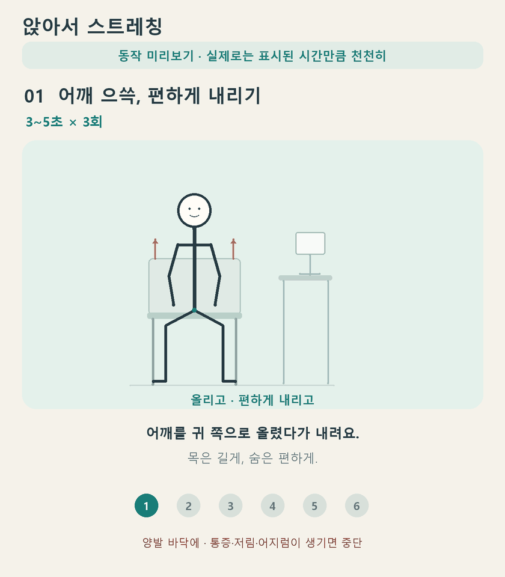
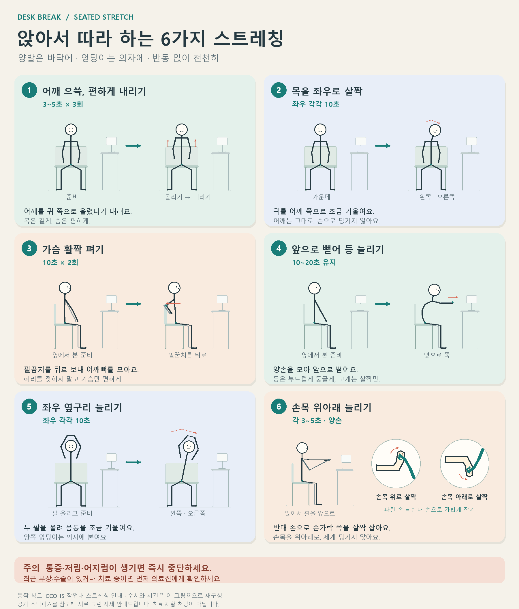

앉아서 따라 하는 졸라맨 스트레칭
양발은 바닥에, 엉덩이는 의자에. ① 어깨 → ② 목 → ③ 가슴 → ④ 등 → ⑤ 옆구리 → ⑥ 손목 순서입니다.
움직이는 그림은 동작 미리보기입니다. 재생 속도를 그대로 따라 하지 말고 각 그림에 표시된 시간과 횟수대로 천천히 진행하세요. 통증·저림·어지럼이 생기면 중단하세요.
움직임을 먼저 확인하세요
여섯 동작이 순서대로 반복됩니다. 손목 동작에는 손 확대 그림이 들어 있습니다.

시작 자세와 동작 방향
왼쪽 준비 자세에서 오른쪽 동작으로. 손목은 위아래 두 방향을 확대했습니다.

동작 참고: CCOHS, Office Ergonomics — Stretching at the Workstation. 순서·일부 자세·시간은 이 안내용으로 재구성했습니다. 시각 참고: Wikimedia Commons의 공개 스틱피겨, Simple Stick Figure.svg. 자세 그림은 새로 그렸습니다.